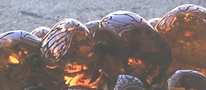
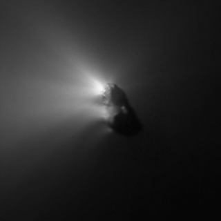

|
|
Navig.
page/section


_____
|
|
Pages soeurs
I, A propos des liants
II, Bulles, siccativ., struct. élec.
III, Caséine, phosphore, dissociation
IV, Les orbitales
V, L'aérogel
VI, Polarisation de la lumière
VII, Sfumato et diffusion Rayleigh
VIII, Les interférentielles
IX, Dextrine, farine et chiralité
X, L'ocre bleue
XI, Les métamatériaux
XII, Le jaunissement
XIII, Laser etc.
XIV, L'holographie
XV, L'holographie numérique
XVI, Extérieur, intérieur, chaux
XVII, L'électrolyse et les ions
XVIII, L'électricité, un peu plus loin
XIX, Oxydation, métaux
XX, Les échelles
XXI, Nature et évolution des résines
XXII, Le mouillage pigmentaire
XXIII, La molette
XXIV, Blanche neige
XXV, Lumière et matière
XXVI, Magnétisme
XXVII, Ambre et vieilles branches
XXVIII, L'origami miroir
XXIX, Le feu
XXX, Peau du métal
XXXI, La ville en un souffle
XXXII, Oxyder des matériaux
XXXIII, Ocre bleue, une solution
_____
|
Copyright © www.dotapea.com
Tous droits réservés.
Précisions cliquer ici
|
|
| |
|
|
Les dialogues sur la physique-chimie
appliquée aux arts
Chapitre
XXVII
Ambre
et vieilles branches |
 |
dial dial
dial
|
Ce chapitre est une discussion
entre Jean-Louis, physico-chimiste au CNRS, et Emmanuel,
candide.
|
Il est souhaitable quoique non
indispensable de lire en premier lieu
l'article consacré à l'ambre. Cliquer
ici
|
Emmanuel :
Tout part du courrier d'un lecteur à lire
ici.
Pour résumer, une entreprise de lutherie
vend des produits à l'ambre et dans sa documentation, assimile l'ambre jaune à une substance terpénique.
Comme indiqué dans la réponse déjà publiée, elle l'est au départ car il s'agit bien sûr de sève, mais la
longue transformation de cette substance la fossilise et les auteurs
"Beaux-arts" (citons Delcroix et Havel
et Perego) ne classent pas la
résine obtenue parmi les produits terpéniques.

On pourrait aussi ajouter à titre
informatif le fait
que François Perego
note dans l'ambre la présence de soufre. Au-delà, évitons les polémiques sur
les classifications car elles deviendraient vite sibyllines. Le texte
qui est à la source de notre intérêt renouvelé pour l'ambre (désolé amis
lecteurs, nous ne pouvons pas le publier mais c'est sans importance ici) pose
des questions d'un intérêt plus général
* sur le
rapport possible entre oxygénation et évaporation d'une part. En effet
si l'on suit le raisonnement de l'auteur, les deux phénomènes
interviendraient dans la genèse de l'ambre,
* et entre
oxygénation et polymérisation d'autre part,
tout cela dans un univers issu du vivant.
Donc quelques questions au risque
de paraître un peu technique : sais-tu, Jean-Louis, si le C10H16
(le terpène) a besoin d'incorporer O pour
s'évaporer ? Et par ailleurs, crois-tu que l'oxygène joue un rôle dans
la polymérisation terpénique qui, soit
dit en passant, semble un phénomène fascinant à en croire Delcroix et Havel : « (...)
tous les composés terpéniques se présentent structuralement comme des
polymères de l'isoprène (...) qui n'est cependant pas leur véritable
précurseur dans la synthèse qu'en effectue la nature. Celle-ci se permet
en effet de "découper" la formule développée d'un terpène en "motifs
isoprènes". »
"Sang des plantes", ou plutôt assemblages
moléculaires un peu inhabituels, les terpènes semblent propres à un
monde particulier et foisonnant.
Jean-Louis :
Quasiment par définition, la composition des produits végétaux est
TRÈS complexe. Des milliers de molécules rien que dans un jus de truffe
ou la sève d'une plante.
Dans la plupart des cas, ce sont des petites
molécules. Sinon ça ne coulerait pas et ça ne servirait à rien biologiquement.
Ensuite l'oxydation, la perte de fractions volatiles, les UV, tout ça,
fait que les molécules se transforment et qu'éventuellement les poids
moléculaires grimpent, et l'on obtient des huiles, des gommes, des
résines.
|
|
--> à ce sujet lire
l'article consacré au terpène, cette base
moléculaire qui est essentielle au monde végétal puisque constitutive
des sèves, des latex et d'un nombre imposant de substances. |
|
L'évaporation c'est juste le passage
de molécules liées (liquides ou solides) à des molécules non liées (gaz). C'est purement physique.
D'ailleurs ça marche dans le vide. Les comètes s'évaporent, d'où leur
queue. Sous vide on peut même évaporer des métaux.
Il existe des dizaines de sortes de
polymérisations et l'oxygène peut aussi bien en catalyser une et en
inhiber une autre. Les substances du genre terpènes n'ont pas besoin
d'oxygène pour réticuler. Lumière ou chaleur suffisent. Aucun produit
n'a besoin d'oxygène pour s'évaporer. L'évaporation est un phénomène
physique, pas chimique.
Au risque de choquer, je dirais que savoir d'où ça vient et comment
c'est formé n'a pas grand intérêt. C'est comme la formation du charbon
ou du pétrole. On sait que c'est d'origine organique, que ça prend
longtemps, et puis après ? On ne va pas en refaire...
Tu as déjà vu les
boules de résine qui se forment sur les résineux ou sur les cerisiers ?
C'est pareil, juste quelques milliers d'années par dessus. Ce qui peut
s'évaporer s'évapore (ex. essence de térébenthine), ce qui peut
réticuler réticule, et voilà. On trouve des fourmis et des abeilles dedans, et
comme c'est gluant au départ il y a une croûte terreuse autour
[lien].
On en fait
un fromage à cause de l'origine préhistorique, mais c'est pas différent
d'une colle époxy ou d'un mastic
styrène. Tu prends un pot d'huile de
lin, tu attends quelques milliers d'années (même moins) et tu auras un bloc
de résine....
Emmanuel :
Oui, on fait tout un fromage, dirait-on, à partir de vieilles branches
qui n'ont rien demandé.
Joli détour par les comètes, merci :)

Halley photographiée par
la sonde Giotto le 14/3/1986
Source CNES - Crédits :
ESA/MPAE, 1986
|
|
Au sujet du caractère non
liant des gaz, lire un passage
de l'article consacré aux phases de la matière. |
|
Chapitre suivant |
Retour
début de page
|
|

 Communication
Communication
|
|